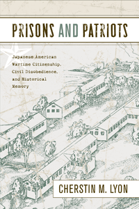

<body bgcolor="#FFFFFF" text="#000000" link="#0000FF" vlink="#CC0000" alink="#CC0000"><center><hr width="350" size="1" align="center" noshade>Reexamining wartime definitions of citizenship, patriotism, prisons, and civil disobedience through the lives of Gordon Hirabayashi and the Tucsonians<hr width="350" size="1" align="center" noshade><p><a href="https://cdcshoppingcart.uchicago.edu/Cart/ChicagoBook.aspx?ISBN=9781439901861&&PRESS=temple" target="_top">Buy this book!</a> | <a href="https://cdcshoppingcart.uchicago.edu/Cart/Cart.aspx?PRESS=temple" target="_top">View Cart</a> | <a href="https://cdcshoppingcart.uchicago.edu/Cart/Cart.aspx?PRESS=temple" target="_top">Check Out</a></p><p></p></center><!--none//--><h1>Prisons and Patriots</h1>
<H2>Japanese American Wartime Citizenship, Civil Disobedience, and Historical Memory</H2>
<h3>Cherstin M. Lyon</h3>
<P>cloth 1-4399-0186-4 $85.50, Nov 11, <FONT COLOR=#990033>Available</FONT>
<br>paper 1-4399-0187-2 $32.95, Nov 11, <FONT COLOR=#990033>Available</FONT>
<br>Electronic Book 1-4399-0188-0 $32.95 <FONT COLOR=#990033>Available</FONT>
<BR> 256 pp
6x9
3&nbsp;tables 14&nbsp;halftones
</P><BLOCKQUOTE><I>"</I>Prisons and Patriots<I> adds welcome depth and analysis to a growing number of works that are now disclosing two increasingly important reasons the Japanese American experience during World War II needs further research: first, the complex ways in which the Japanese American communities responded to the unconstitutional barbarity with which the U.S. government treated them and, second, the fascinating ways in which postwar actors sought to play roles in the crafting of a metanarrative for the ethnic group, the war, and the nation. Lyon accomplishes this by focusing on the lives of forty-one Nisei, with sensitive oral histories contextualized by solid archival research. She is especially effective in juxtaposing the well-known story of Gordon Hirabayashi with the little-known experiences of forty-one other draft resisters who were imprisoned during the war and ostracized by their leaders and communities for decades thereafter. This is a fine book, much needed at this point in time."</I><BR> &#151<B>Franklin S. Odo</B>, Chief, Asian Division, Library of Congress</I></BLOCKQUOTE>
<p><i>Prisons and Patriots</i> provides a detailed account of forty-one Nisei (second-generation Japanese Americans), known as the Tucsonians, who were imprisoned for resisting the draft during WWII. Cherstin Lyon parallels their courage as resisters with that of civil rights hero Gordon Hirabayashi, well known for his legal battle against curfew and internment, who also resisted the draft. These dual stories highlight the intrinsic relationship between the rights and the obligations of citizenship, particularly salient in times of war.
<p>Lyon considers how wartime civil disobedience has been remembered through history&#8212;how soldiers have been celebrated for their valor while resisters have been demonized as unpatriotic. Using archival research and interviews, she presents a complex picture of loyalty and conflict among first-generation Issei and Nisei. Lyon contends that the success of the redress movement has made room for a narrative that neither reduces the wartime confinement to a source of shame nor proffers an uncritical account of heroic individuals.
<BR>&nbsp;<h2>Excerpt</h2><P>Excerpt available at <a href="http://www.temple.edu/tempress">www.temple.edu/tempress</a></p>
<BR>&nbsp;<h2>Reviews</h2>
<p><I>"In </I>Prisons and Patriots<I>, Cherstin Lyon presents, in a clear, accessible style, original material that is not available elsewhere. She provides interesting case studies of the internment of the draft resisters�known as �Tucsonians��along with an examination of the generational conflict within the Japanese American community. Her discussion of internal tensions, in particular regarding the role of the Japanese American Citizens League, which was viewed as hyper-assimilationist and insufficiently protective of civil rights, is balanced and nuanced, and her research methodology is sound."</I><br>&#151<b>Frank Wu</b>, Chancellor and Dean and the William B. Lockhart Professor of Law at the University of California, Hastings College of the Law, and author of <I>Yellow: Race in America beyond Black and White</I>
<p><i>"</i>Prisons and Patriots<i> is Cherstin Lyon�s first book. Its publication catapults Professor Lyon, a historian at California State University, San Bernardino, into the ranks of the premier scholars of World War II Japanese American protest and dissent.... The genius of Lyon�s book lies less in the stories she recounts than in her placing them into instructive and relevant contexts. The most important of them concerns the nature of citizenship." </i><br>&#151<b><i>Nichi Bei Times</i></b>
<p><i>"With clarity and precision, Lyon tells the complicated story of Gordon Hirabayashi and a handful of resisting Nisei internees who refused to submit to the draft from inside the War Relocation Authority's internment camps during WW II.... Historically strong and emotionally powerful, this book shows that the prisons created the patriots, and it does them justice by honoring their actions correctly. Highly Recommended."</i> <br>&#151<b><i>CHOICE</i></b>
<p><i>"</i>Prisons and Patriots<i> provides an insightful analysis of the causes and consequences of civil disobedience by Nisei (second-generation Japanese Americans) during World War II.... Lyon effectively uses oral histories and government records to show the variety of perspectives displayed by draft resisters during and after the war.... One can hope that other scholars will be inspired by Lyon�s thorough research and elegant narrative to develop a comparative analysis of the postwar discrimination faced by draft resisters and other Japanese Americans branded as 'disloyal.'"</i> <br>&#151<b><i>The Journal of American History</i></b>
<p><i>"Lyon�s book is bold, balanced, and solid. Her research will get readers to view and think of history in a new way."</i> <br>&#151<b><i>Rafu Shimpo</i>, the Los Angeles Japanese Daily News</b>
<p><i>"Lyon opens with an effective chapter on the prewar experiences of Nisei (or second-generation Japanese Americans) as they gradually came to recognize the sharp divide between American ideals and the segregated world in which they grew up. Expertly employing personal stories as she does throughout most of the book, Lyon explains how different Nisei came to this understanding at different times.... Importantly, Lyon emphasizes the complexity and diversity of opinion�both then and now�within Japanese America, her book providing an important reminder that the story of exile and incarceration resists simplistic narratives of cowardice or heroism, as the resisters were </i>both<i> prisoners </i>and<i> patriots, labels that have been endlessly (if quietly, at times) debated ever since."</i> <br>&#151<b><i>American Historical Review</i></b>
<p><i>"</i>Prisons and Patriots<i> utilizes archival sources and oral interviews to recount...stories of resistance.... Lyon has written a solid study that should be read by those interested in Japanese American history and the history of civil disobedience."</i> <br>&#151<b><i>Western Historical Quarterly</i></b>
<p><i>"[A] nuanced and compelling narrative.... Lyon�s </i>Prisons and Patriots<i> deserves to be read widely by scholars and students alike for its deft historicizing of citizenship that attends to a speci?c time and place but has much broader implications."</i> <br>&#151<b><i>Pacific Historical Review</i></b>
<p><i>"[P]rovocative.... The book�s strength lies in the latter half, as Lyon makes a very convincing case about the transformation of Japanese American resisters from criminals to patriots during and after World War II.... A highly accessible book, </i>Prisons and Patriots<i> strips away the layered and multi-faceted silences behind the iconic image of the patriotic Japanese American solider."</i><br>&#151<b><i>Journal of American Ethnic History</i></b>
<p><i>"What is new and most important in </i>Prisons and Patriots<i> is its expansion of what we know about protest and resistance in the wartime camps for Japanese Americans.... Her comments and analysis of variant memories within the nation and particularly within the Japanese American community is a major addition not only to the historical record but also to ongoing debates within the Japanese American community."</i><br>&#151<b><i>Contemporary Sociology</i></b>
<p><i>"</i>Prisons and Patriots<i> is a provocative account of the efforts of a few Japanese Americans who chose to resist rather than submit. Lyon engages the reader with individual memoirs as she examines democracy, war, and society from the perspective of Japanese Americans during World War II and beyond. The result is a disturbing picture of racial inequality in the West that rivals the prejudice toward African Americans in the South."</i><br>&#151<b><i>Western Legal History</i></b>
<BR>&nbsp;<h2>Contents</h2><P>
<p>Acknowledgments
<br>A Note on Terminology
<br>Introduction: "A Footstep in the Sand of Time"
<br>1. Lessons in Citizenship
<br>2. Nisei Wartime Citizenship
<br>3. Loyalty and Resistance
<br>4. Gordon Hirabayashi in the Tucson Federal Prison Camp
<br>5. The Obligations of Citizenship
<br>6. Prison and Punishment
<br>7. Reunions, Redress, and Reconciliation
<br>Conclusion: The Changing Nature of Citizenship
<br>Notes
<br>Bibliography
<br>Index
</P><BR>&nbsp;<H2>About the Author(s)</H2>
<P><b>Cherstin M. Lyon</b> is Assistant Professor of History, California State University, San Bernardino.</P>
<BR><H2>Subject Categories</H2>
<p><A HREF="/tempress/history.html" TARGET="_top">History</a>
<BR><A HREF="/tempress/asian_amer.html" TARGET="_top">Asian American Studies</a>
<BR><A HREF="/tempress/american.html" TARGET="_top">American Studies</a>
</p>
<BR><h2 class="inpageheading">In the series</H2>
<P><I><a href="http://www.temple.edu/tempress/asam_history.html" onMouseOver="window.status='Click for other books in this series!'; return true;" onMouseOut="window.status=''; return true;" target="_top">Asian American History and Culture</a></i>, edited by K. Scott Wong, Linda Trinh V�, and Cathy Schlund-Vials.
</p><p>Founded by Sucheng Chan in 1991, the <I>Asian American History and Culture</I>, series has sponsored innovative scholarship that has redefined, expanded, and advanced the field of Asian American studies while strengthening its links to related areas of scholarly inquiry and engaged critique. Like the field from which it emerged, the series remains rooted in the social sciences and humanities, encompassing multiple regions, formations, communities, and identities. Extending the vision of founding editor Sucheng Chan and emeriti editor Michael Omi and David Palumbo-Liu, series editors K. Scott Wong, Linda Trinh V�, and Cathy Schlund-Vials continue to develop a foundational collection that embodies a range of theoretical and methodological approaches to Asian American studies.</p>
<p align="center"><a href="https://cdcshoppingcart.uchicago.edu/Cart/ChicagoBook.aspx?ISBN=9781439901861&&PRESS=temple" target="_top">Buy this book!</a> | <a href="https://cdcshoppingcart.uchicago.edu/Cart/Cart.aspx?PRESS=temple" target="_top">View Cart</a> | <a href="https://cdcshoppingcart.uchicago.edu/Cart/Cart.aspx?PRESS=temple" target="_top">Check Out</a></p><p><font face="Arial" size="1"><a href="copyright.html" onMouseOver="window.status='Web Copyright Policy';return true;" onMouseOut="window.status=''" title="Web Copyright Policy">&copy;</a> 2015 <a href="http://www.temple.edu" target="new" onMouseOver="window.status='Link to Temple University home page';return true;" onMouseOut="window.status=''" title="Link to Temple University home page">Temple University</a>. All Rights Reserved. http://www.temple.edu/tempress/titles/2066_reg.html</font></p>